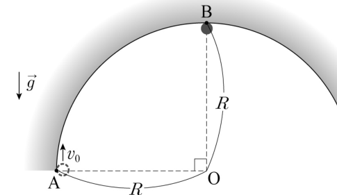
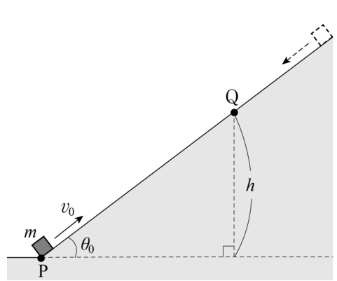
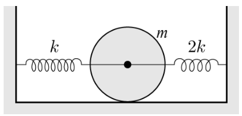

역학·보존 법칙 객관식 5문항 — 원운동·마찰 경사면·구르는 진동·라그랑지안·입자 반응Vertical circle · incline with friction · rolling oscillator · Lagrangian on a parabola · conservation laws in particle reactions
그림과 같이 마찰이 없고 반지름 \(R\)인 반원형 구조물의 내부 면상에 있는 A 지점에서 초기속력 \(v_0\)으로 질량 \(m\)인 물체를 연직 상방으로 쏘아 올렸다. 이 물체는 반원형 궤도를 따라 원운동하였다.

이 물체가 최고점 B를 지나는 순간, 물체가 구조물로부터 받는 수직항력의 크기는? (단, \(g\)는 중력가속도이고, 공기 저항과 물체의 크기는 무시한다.)
그림과 같이 수평인 지면에 대하여 경사각 \(\theta_0\)인 마찰이 있는 경사면 꼭대기에 정지해 있던 질량 \(m\)인 물체에 순간적인 힘을 주었더니 등속도로 미끄러져 내려왔다. 이 물체를 지면상의 P 지점에서 경사면을 따라 초기속력 \(v_0\)으로 쏘아 올렸더니 Q 지점에 정지하였다.

지면으로부터 Q 지점까지의 수직 높이 \(h\)는? (단, \(g\)는 중력가속도이고, 공기 저항과 물체의 크기는 무시한다.)
그림과 같이 질량 \(m\), 반지름 \(R\)인 원판의 중심에 용수철상수가 각각 \(k\)와 \(2k\)인 두 개의 용수철이 수평으로 연결되어 있다. 두 용수철은 각각 벽에 고정되어 평형상태에 있으며, 원판은 정지해 있다. 원판의 중심을 원판면에 수직으로 통과하는 축에 대한 원판의 관성모멘트는 \(I=\dfrac12mR^2\)이다.

원판이 수평면 위를 미끄러지지 않고 구르면서 직선상에서 단진동하게 하였을 때, 단진동의 주기는? (단, 용수철의 질량은 무시한다.) [2.5점]
질량 \(m\)인 입자가 \(y=bx^2\)으로 주어지는 포물선 궤도를 따라 운동하도록 구속되어 있다. \(b\)는 양의 상수이고, \(-y\) 방향으로 중력이 작용하고 있다. 이 입자의 운동에 대한 설명으로 옳은 것만을 <보기>에서 모두 고른 것은? (단, \(g\)는 중력가속도이고, \(y=0\)에서 중력 퍼텐셜에너지는 0이다.) [2.5점]
- ㄱ. 라그랑지안은 \(L=\dfrac12m\dot x^2+2m(bx\dot x)^2-mgbx^2\)이다.
- ㄴ. \(x\)에 대한 일반화운동량은 시간에 따라 변하지 않는다.
- ㄷ. 운동방정식은 \((1+4b^2x^2)\ddot x+4b^2x\dot x^2+2gbx=0\)이다.
양성자(\(p\)), 반양성자(\(\bar p\)), 중성자(\(n\)), 양전하를 띤 파이온(\(\pi^+\))은 강입자이고, 전자(\(e\)), 양전자(\(e^+\)), 전자중성미자(\(\nu_e\))는 경입자이다. 이들 입자의 반응에서는 전하량, 중입자수(baryon number), 경입자수(lepton number)가 보존된다. 이 보존 법칙에 위배되지 않는 반응은? (단, \(\gamma\)는 광자를 나타낸다.)
정답문항별 정답 (AI 풀이 ↔ 정답표)
| 문항 | AI 풀이 | 정답표 | 배점 | 판정 | 핵심 아이디어 |
|---|---|---|---|---|---|
| 15 | ① | ① | 2 | 일치 ✓ | 에너지: \(v_B^2=v_0^2-2gR\). B에서 \(N+mg=mv_B^2/R\). |
| 16 | ① | ① | 2 | 일치 ✓ | \(\mu mg\cos\theta_0=mg\sin\theta_0\). 올라갈 때 감속력 \(2mg\sin\theta_0\) → 거리 \(s=v_0^2/(4g\sin\theta_0)\), \(h=s\sin\theta_0\). |
| 17 | ② | ② | 2.5 | 일치 ✓ | \(E=\tfrac12\cdot\tfrac32m\dot x^2+\tfrac12(3k)x^2\) → \(\omega^2=\dfrac{3k}{3m/2}=\dfrac{2k}{m}\). |
| 18 | ③ | ③ | 2.5 | 일치 ✓ | \(T=\tfrac12m(\dot x^2+4b^2x^2\dot x^2)\), \(V=mgbx^2\). \(p_x=m\dot x(1+4b^2x^2)\)는 \(\partial L/\partial x\ne0\)이라 보존되지 않음. |
| 19 | ④ | ④ | 2 | 일치 ✓ | ④: Q +1 → 0+1+0, B 1 → 1, L 0 → −1+1 — 모두 보존. |
1문항별 풀이 — 선지·보기 분석 포함
15반원형 궤도 최고점의 수직항력 2점
그림과 같이 마찰이 없고 반지름 \(R\)인 반원형 구조물의 내부 면상에 있는 A 지점에서 초기속력 \(v_0\)으로 질량 \(m\)인 물체를 연직 상방으로 쏘아 올렸다. 이 물체는 반원형 궤도를 따라 원운동하였다.
이 물체가 최고점 B를 지나는 순간, 물체가 구조물로부터 받는 수직항력의 크기는? (단, \(g\)는 중력가속도이고, 공기 저항과 물체의 크기는 무시한다.)
1계산
\(v_B^2=v_0^2-2gR\). 최고점에서 구조물 면은 물체 위쪽에 있으므로 수직항력은 아래(중심) 방향: \(N+mg=\dfrac{mv_B^2}{R}\) → \(N=\dfrac{mv_0^2}{R}-2mg-mg=\dfrac{mv_0^2}{R}-3mg\).
| 선지·보기 | 해설 |
|---|---|
| ① | ✓ |
| ② | \(N=mv_B^2/R\)로 중력을 빼먹음 |
| ③ | 높이 변화를 빠뜨림 |
| ④⑤ | 수직항력 방향을 반대로(위로) 잡음 |
16마찰 있는 경사면 위로 쏘아 올리기 2점
그림과 같이 수평인 지면에 대하여 경사각 \(\theta_0\)인 마찰이 있는 경사면 꼭대기에 정지해 있던 질량 \(m\)인 물체에 순간적인 힘을 주었더니 등속도로 미끄러져 내려왔다. 이 물체를 지면상의 P 지점에서 경사면을 따라 초기속력 \(v_0\)으로 쏘아 올렸더니 Q 지점에 정지하였다.
지면으로부터 Q 지점까지의 수직 높이 \(h\)는? (단, \(g\)는 중력가속도이고, 공기 저항과 물체의 크기는 무시한다.)
1계산
등속 하강: \(f=mg\sin\theta_0\). 상승: \(ma=mg\sin\theta_0+f=2mg\sin\theta_0\). \(s=\dfrac{v_0^2}{2a}=\dfrac{v_0^2}{4g\sin\theta_0}\) → \(h=s\sin\theta_0=\dfrac{v_0^2}{4g}\).
(일–에너지: \(\tfrac12mv_0^2=mgh+f\cdot s=2mgh\).)
| 선지·보기 | 해설 |
|---|---|
| ① | ✓ — 마찰이 운동 에너지의 절반을 소모 |
| ② | 마찰을 무시 |
| ④⑤ | 속도를 성분으로 잘못 분해 |
17두 용수철에 연결되어 구르는 원판의 주기 2.5점
그림과 같이 질량 \(m\), 반지름 \(R\)인 원판의 중심에 용수철상수가 각각 \(k\)와 \(2k\)인 두 개의 용수철이 수평으로 연결되어 있다. 두 용수철은 각각 벽에 고정되어 평형상태에 있으며, 원판은 정지해 있다. 원판의 중심을 원판면에 수직으로 통과하는 축에 대한 원판의 관성모멘트는 \(I=\dfrac12mR^2\)이다.
원판이 수평면 위를 미끄러지지 않고 구르면서 직선상에서 단진동하게 하였을 때, 단진동의 주기는? (단, 용수철의 질량은 무시한다.) [2.5점]
1에너지 방법
\(K=\tfrac12m\dot x^2+\tfrac12\cdot\tfrac12mR^2\left(\dfrac{\dot x}{R}\right)^2=\tfrac34m\dot x^2\), \(U=\tfrac12kx^2+\tfrac12(2k)x^2=\tfrac32kx^2\).
\(\dfrac{dE}{dt}=0\) → \(\tfrac32m\ddot x=-3kx\) → \(\omega=\sqrt{2k/m}\), \(T=2\pi\sqrt{\dfrac{m}{2k}}\).
| 선지·보기 | 해설 |
|---|---|
| ① | 구름(회전 관성)을 무시하고 미끄러지는 경우 |
| ② | ✓ |
| ③④⑤ | 유효 질량·유효 상수 조합 실수 |
18포물선 궤도 입자의 라그랑지안 2.5점
질량 \(m\)인 입자가 \(y=bx^2\)으로 주어지는 포물선 궤도를 따라 운동하도록 구속되어 있다. \(b\)는 양의 상수이고, \(-y\) 방향으로 중력이 작용하고 있다. 이 입자의 운동에 대한 설명으로 옳은 것만을 <보기>에서 모두 고른 것은? (단, \(g\)는 중력가속도이고, \(y=0\)에서 중력 퍼텐셜에너지는 0이다.) [2.5점]
- ㄱ. 라그랑지안은 \(L=\dfrac12m\dot x^2+2m(bx\dot x)^2-mgbx^2\)이다.
- ㄴ. \(x\)에 대한 일반화운동량은 시간에 따라 변하지 않는다.
- ㄷ. 운동방정식은 \((1+4b^2x^2)\ddot x+4b^2x\dot x^2+2gbx=0\)이다.
1ㄱ
\(\dot y=2bx\dot x\) → \(T=\tfrac12m\dot x^2+\tfrac12m(2bx\dot x)^2=\tfrac12m\dot x^2+2m(bx\dot x)^2\), \(V=mgy=mgbx^2\) → 옳음.
2ㄴ·ㄷ
\(p_x=\dfrac{\partial L}{\partial\dot x}=m\dot x(1+4b^2x^2)\), \(\dot p_x=\dfrac{\partial L}{\partial x}=4mb^2x\dot x^2-2mgbx\ne0\) → ㄴ 틀림.
\(m(1+4b^2x^2)\ddot x+8mb^2x\dot x^2=4mb^2x\dot x^2-2mgbx\) → \((1+4b^2x^2)\ddot x+4b^2x\dot x^2+2gbx=0\) → ㄷ 옳음.
| 선지·보기 | 해설 |
|---|---|
| ㄱ | T, V 모두 바름 |
| ㄴ | x가 순환 좌표가 아님 → p_x 변함 |
| ㄷ | 오일러–라그랑주 방정식 그대로 |
| ③ | ㄱ, ㄷ ✓ |
19입자 반응과 보존 법칙 2점
양성자(\(p\)), 반양성자(\(\bar p\)), 중성자(\(n\)), 양전하를 띤 파이온(\(\pi^+\))은 강입자이고, 전자(\(e\)), 양전자(\(e^+\)), 전자중성미자(\(\nu_e\))는 경입자이다. 이들 입자의 반응에서는 전하량, 중입자수(baryon number), 경입자수(lepton number)가 보존된다. 이 보존 법칙에 위배되지 않는 반응은? (단, \(\gamma\)는 광자를 나타낸다.)
1점검
① Q: 0 → +1 ✕. ② B: 1 → 0 ✕. ③ B: 1 → 0 ✕. ④ Q 1=1, B 1=1, L 0=0 ○. ⑤ B: 0 → 1 ✕.
(④는 자유 양성자에서는 에너지 보존 때문에 일어나지 않지만, 원자핵 속에서는 β⁺ 붕괴로 일어난다.)
| 선지·보기 | 해설 |
|---|---|
| ① | 전하량 위배 |
| ② | 중입자수 위배 |
| ③ | 중입자수 위배 |
| ④ | Q·B·L 모두 보존 ✓ |
| ⑤ | 중입자수 0 → 1 위배 |
2출제 의도·검토
출제 의도
- 에너지·힘 방법(15·16), 회전을 포함한 에너지 방법(17), 라그랑지안 형식(18), 입자 물리의 보존량(19) — ‘보존’을 여러 형식으로 묻는다.
검토 의견
3문항별 모의실험 (5개 — 문항마다 하나, 마우스로 돌리기·휠 확대)
153D 모의실험 — 15번 반원형 궤도 안쪽 면의 원운동
163D 모의실험 — 16번 등속으로 미끄러지는 경사면에 쏘아 올리기
173D 모의실험 — 17번 두 용수철에 연결된 굴러가는 원판
183D 모의실험 — 18번 포물선 궤도에 구속된 입자
19모의실험 — 19번 입자 반응의 보존 법칙 점검
4고등학생 지도 — 고교 교육과정과 잇기
고등학생에게 쓰기
- 15·16번은 고교 물리학Ⅰ·Ⅱ 범위로 바로 풀 수 있다.
- 17번은 ‘구르면 더 무거워진 것처럼 움직인다’로, 19번은 기본 입자 표로 소개.
심화
18번은 대학 고전역학의 입문 예제 — 영재반이라면 ‘에너지 보존으로 운동 방정식을 얻는 방법’(dE/dt = 0)과 비교해 보게 한다.
5수업 활용 안내
수업 흐름 (50분)
- 개별 풀이 (13분) — 문항당 2~3분
- 보존량 정리 (10분) — 에너지·운동량·일반화 운동량·Q·B·L
- 선지 분석 (12분) — 오답 선지의 실수 원인
- 모의실험 (12분) — 15 수직항력, 16 h 일정, 17 유효 질량, 18 p_x 변화
- 정리 (3분) — 핵심 식 한 줄
자주 나오는 오개념
- “최고점에서 수직항력은 위로” → 안쪽 면이면 중심(아래) 방향
- “마찰이 있으면 각도에 따라 h가 달라진다” → 등속 조건이면 v₀²/4g
- “구르는 진동도 주기는 2π√(m/k)” → 회전 관성 포함
- “라그랑지안이 있으면 일반화 운동량은 보존” → 순환 좌표일 때만
평가 포인트
- 원운동 방정식의 방향을 바르게 세우는가
- 등속 조건을 μ로 바꾸는가
- 회전 운동 에너지를 포함하는가
- 보존량의 조건을 아는가
더 나아가기
17번을 라그랑지안으로 다시 풀고, 원판이 미끄러지는 경우(주기 2π√(m/3k))와 비교한다.